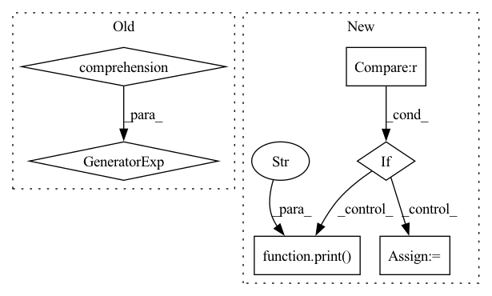

Pattern ID :1163
Before Change
print("Initializing model: {}".format(args.arch))
model = models.init_model(name=args.arch, num_classes=dataset.num_train_pids, loss={"xent"})
print("Model size: {:.5f}M".format(sum(p .numel() for p in model.parameters())/1000000.0))
criterion = CrossEntropyLabelSmooth(num_classes=dataset.num_train_pids, use_gpu=use_gpu)
optimizer = init_optim(args.optim, model.parameters(), args.lr, args.weight_decay)After Change
best_epoch = 0
print("==> Start training")
if args.fixbase_epoch > 0 :
print("Train classifier for {} epochs while keeping base network frozen".format(args.fixbase_epoch))
for epoch in range(args.fixbase_epoch):
start_train_time = time.time()
train(epoch, model, criterion, optimizer_tmp, trainloader, use_gpu, freeze_bn=True)
train_time += round(time.time() - start_train_time)
del optimizer_tmp
print("Now open all layers for training" )
for epoch in range(start_epoch, args.max_epoch):
start_train_time = time.time()
train(epoch, model, criterion, optimizer, trainloader, use_gpu)In pattern: SUPERPATTERN
Frequency: 3
Non-data size: 6
Instances Fragment ID: 5855385
Project Name: vlsomers/bpbreid
Commit Name: b88d36cd9c8056e15607a40f5d10a9072ab84b22
Time: 2018-07-06
Author: k.zhou@qmul.ac.uk
File Name: train_vidreid_xent.py
M Class Name: AnonimousClass
N Class Name: AnonimousClass
M Method Name: main(0)
N Method Name: main(0)
M Parent Class:
N Parent Class:
M File Name: train_vidreid_xent.py
N File Name: train_vidreid_xent.py
M Start Line: 149
M End Line: 150
N Start Line: 97
N End Line: 198
Before Change
out_dir.mkdir(parents=True)
data_in_type = "".join(s for s in cfg.in_type if not s.isdigit())
num_channels = int("".join(i for i in cfg.in_type if i.isdigit()))
num_classes = SYNPICK_CLASSES + 1 if cfg.include_gripper else SYNPICK_CLASSES
vid_type = (data_in_type, num_channels)
After Change
elif cfg.model == "lstm":
print("prediction model: LSTM")
pred_model = LSTMModel(in_channels=num_channels, out_channels=num_channels).to(DEVICE)
elif cfg.model == "st_lstm" :
print("prediction model: ST-LSTM" )
pred_model = ST_LSTM_NoEncode(img_size=train_data.img_shape, img_channels=num_channels, device=DEVICE)
else:
print("prediction model: CopyLastFrame")
pred_model = CopyLastFrameModel().to(DEVICE) Fragment ID: 5855384
Project Name: ais-bonn/vp-suite
Commit Name: fad2f90c44c219d2af842dddbb66ecc4feae7d7c
Time: 2021-09-01
Author: boltres@ais.uni-bonn.de
File Name: train_pred_model.py
M Class Name: AnonimousClass
N Class Name: AnonimousClass
M Method Name: main(1)
N Method Name: main(1)
M Parent Class:
N Parent Class:
M File Name: train_pred_model.py
N File Name: train_pred_model.py
M Start Line: 26
M End Line: 149
N Start Line: 26
N End Line: 158
Before Change
print("Initializing model: {}".format(args.arch))
model = models.init_model(name=args.arch, num_classes=dataset.num_train_pids, loss={"xent"}, use_gpu=use_gpu)
print("Model size: {:.5f}M".format(sum(p .numel() for p in model.parameters())/1000000.0))
criterion = CrossEntropyLabelSmooth(num_classes=dataset.num_train_pids, use_gpu=use_gpu)
optimizer = init_optim(args.optim, model.parameters(), args.lr, args.weight_decay)After Change
best_epoch = 0
print("==> Start training")
if args.fixbase_epoch > 0 :
print("Train classifier for {} epochs while keeping base network frozen".format(args.fixbase_epoch))
for epoch in range(args.fixbase_epoch):
start_train_time = time.time()
train(epoch, model, criterion, optimizer_tmp, trainloader, use_gpu, freeze_bn=True)
train_time += round(time.time() - start_train_time)
del optimizer_tmp
print("Now open all layers for training" )
for epoch in range(start_epoch, args.max_epoch):
start_train_time = time.time()
train(epoch, model, criterion, optimizer, trainloader, use_gpu) Fragment ID: 5855383
Project Name: vlsomers/bpbreid
Commit Name: b88d36cd9c8056e15607a40f5d10a9072ab84b22
Time: 2018-07-06
Author: k.zhou@qmul.ac.uk
File Name: train_imgreid_xent.py
M Class Name: AnonimousClass
N Class Name: AnonimousClass
M Method Name: main(0)
N Method Name: main(0)
M Parent Class:
N Parent Class:
M File Name: train_imgreid_xent.py
N File Name: train_imgreid_xent.py
M Start Line: 158
M End Line: 159
N Start Line: 105
N End Line: 207